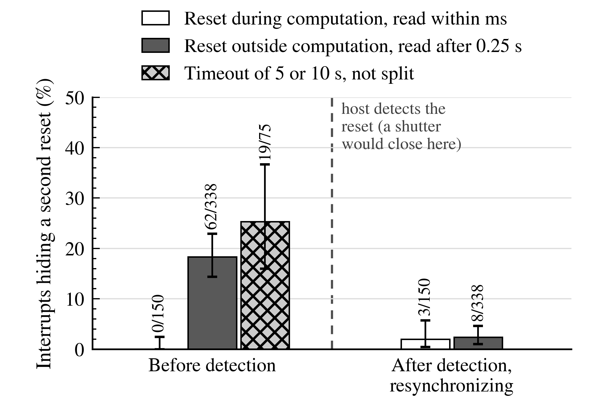

What this page adds
The first page asks how many attempted cycles come back clean. This page asks how much of the time you book turns into countable exposure, and it needs two more numbers a pilot can supply: the mean time a lost cycle costs the test, \(\tau\), and the detection latency \(t_{\mathrm{det}}\), the time from a reset to the host noticing it. The first sets the duty factor. The second sets the chance that a second, independent strike lands before the host is watching again and resets the device without ever being counted.
Setting \(\tau=0\) returns the first page's answer exactly, so this is an extension of the published relation, not a competitor. Both extensions are the companion paper's.
Inputs
As on the first page. Campaign value prefilled.
Event-free, beam off.
The mean from interruption to the resumption of work, including retries and any host timeout, not the median settle. The campaign measured 0.58 to 1.28 s per lost cycle against a 0.165 s settle.
Time from a reset to the host noticing it. A strike landing in this window resets the device again but opens no new recovery episode, so it is never counted. The campaign's host waited 0.25 s before reading in its comparison runs.
Leave blank to work from \(\theta\). Fill it to get the \(\theta\) and flux that deliver this share of countable time.
Duty factor
\(D\) is the share of in-cycle plus recovery time that yields countable exposure, meaning fluence delivered during cycles that survive to report. The charge a test pays is \((1-\theta)\tau/W\). Once \(\theta\) comes from the rule on the first page, \(W\) cancels out of that charge and it is left to \(\tau\): a build already keeping most of its cycles gains more from recovering reliably than from shortening the cycle it runs.
Hidden interrupts
A second strike that lands after one reset, but before the host has resynchronized, resets the device again without opening a new recovery episode, so it is never counted. This is the counting loss known from radiation detectors. It biases a counted interrupt rate low. It does not bias \(\theta\) or the corruption-event rate, since both are counted only on cycles that survived.
Measured at the comparison condition, four FRAM builds, split by when the host was watching:
| Phase | Share hiding a second reset |
|---|
About a tenth of these builds' interrupts were hidden this way at the test flux (6 to 15%), with about 2 points of it arising after detection and the rest before. A pause or a shutter closed on detection removes only those 2 points. The latency before detection remains, so detection latency is the lever, not recovery under beam. The 18% figure above also includes repeated resets after a single event, not only independent strikes.

Reset loops are excluded. Error bars in the source figure are 95% exact intervals.
Chance an interrupt hides an independent strike
The expectation if every hidden reset were an independent strike landing inside the detection window, using the pooled functional-interrupt cross section \(\sigma_{\mathrm{FI}}=9.4\times10^{-6}\) cm² and the flux the rule above gives for your \(\theta\) and \(W\). It is a plain expectation, not a fit. At the test flux and the host's 0.25 s wait it gives about 11%, below the measured 18%, because that figure also counts repeated resets after a single event.
What the campaign measured
Six builds at one flux and LET. The two that keep the most cycles are not the two that keep the most test time, because their recovery is slower. Between 34% and 72% of test time bought no countable exposure, depending on the build.
| Build | \(W\) | \(\theta\) measured | \(\tau\) (s) | \(D\) | Rank by \(\theta\) | Rank by \(D\) |
|---|
Every build recovered in the same 0.165 s when the automatic path worked. What differs is the tail: an episode that fails to resynchronize costs a fixed host timeout of five or ten seconds. Five of the six builds share one failure rate near 4%, and SRAM_B1 is the exception at 16%. The slowest twentieth of episodes carries between a quarter and seven tenths of each build's recovery time, so failing less often, or waiting less when it fails, is a larger lever than the settle.